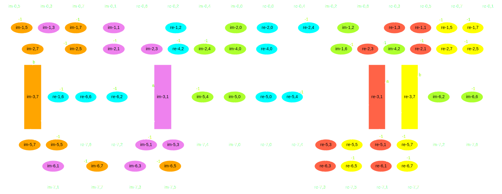
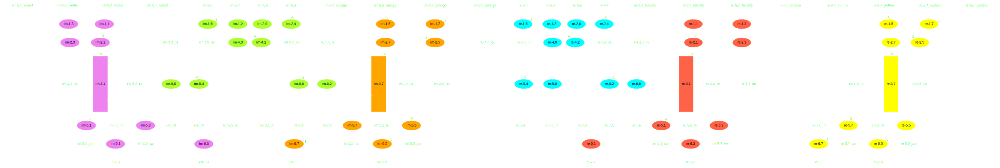
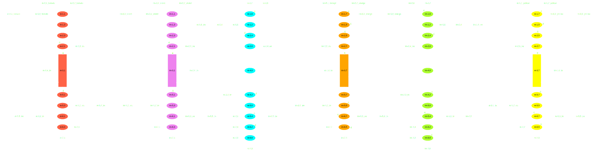

DFG mapping technique
code generation for multiple connected Forth cores
goo.gl/u17KA
Data Flow Graph?

Program as directed graph of data flowing between operations.
Vertex = operation type
Edge = data value
Label = multiplicand
FFT8 as DSP example
Vertex shape = operation type

.
Oval = (+ -), Rectangle = [*], Arrow = <input output>
Example has significant data parallelism. 17 operations at first level.
Mapping approach
- Uniform k-way graph partitioning; k = number of cores in use
- Code generation; one sub-graph per core
2-way graph partitioning (example)
Sub-graphs are of about the same size
Number of edges running between separated components is small

NP-hard problem. Many methods known
6-way graph partitioning example
More colors - more edges crossing
Hard to partition uniformly

Color->Color edges = inter-processor exchange

Hard to see example

Graph serialization
2-way graph serialization (example)

6-way graph serialization (example)
